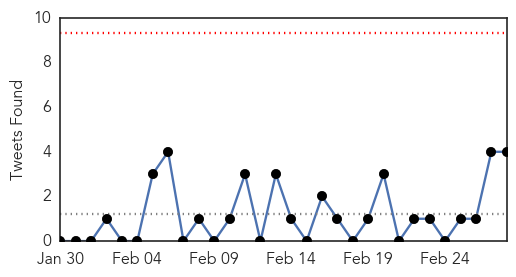
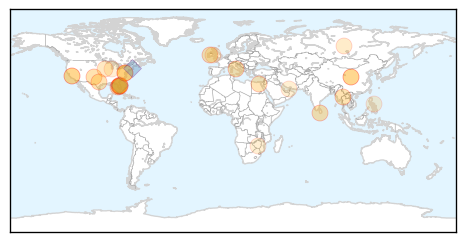

30 Day Trends
Web: 1 alerts, 0 warnings
Twitter: 0 alerts, 0 warnings
Top Articles:
- 0.977
- The Flu Nasal Spray Vaccine for Children Is Just like A Placebo. It Has Zero Effectivity Rate, the CDC.
- 0.967
- Deadly bacteria outbreak linked to UCLA microscopes
- 0.939
- Mounting cases set off rat fever alarm in Sri Lanka
- 0.917
- Chicago Tribune
- 0.917
- Chicago Tribune
- 0.917
- Chicago Tribune
- 0.917
- Chicago Tribune
- 0.917
- Chicago Tribune
- 0.910
- The world windows to Thailand
- 0.900
- Nine-banded armadillos thought to have caused LEPROSY in Florida patients
- 0.886
- Three New Cases Of Leprosy Confirmed In Volusia County, Florida
- 0.871
- 3 Leprosy Cases Confirmed in Florida
- 0.861
- Chinese Immigrants In Sunset Park Struck By Tuberculosis Outbreak
- 0.850
- NewsDaily
- 0.753
- Number of Leprosy Cases relatively Less, but Increasing
- 0.718
- Florida county sees small rare increase in leprosy cases
- 0.710
- Florida county sees small, rare increase in leprosy cases
- 0.701
- 5 Tuberculosis cases reported in Black Hawk County this year
- 0.682
- Patient Files Lawsuit against Scope Marker Linked to Superbug Infection
- 0.632
- The Parkinson’s Mystery By Gill Nelson & Brad A. Racette
- 0.625
- Work at NCP hospitals grind to a halt
- 0.621
- New Study Confirms Negative Impact of Fluoride On Thyroid Gland
- 0.557
- Blood biomarkers found for chronic fatigue syndrome
- 0.549
- Healthcare demands equality
- 0.527
- Deputy Director Dubai Medical District opens 2nd Arab Paediatric Medical Congress
- 0.524
- How Birds Could Make Lyme Disease a National Problem
- 0.520
- Chronic fatigue syndrome is a biological illness: Study
- 0.511
- Dr. Charles M. O’Connor: Ask about cleaning medical equipment
- 0.501
- DOH: Catanduanes is disease-free
Top Tweets:
- 0.571
- RT: 2/2 MERS: only 2 months ever have racked up more cases in KSA, during major hospital outbreaks. Has detection/investi…
- 0.571
- 2/2 MERS: only 2 months ever have racked up more cases in KSA, during major hospital outbreaks. Has detection/investigation declined?
- 0.562
- I think today's MERS cases bring KSA's Feb total to a jaw-dropping 73 cases & 31 deaths - supposedly without major hospital outbreaks 1/2
- 0.514
- AFD blog `@CDCgov H5 Avian Flu Update' CDC H5 Avian Flu Update H5N8
Web/News Articles

Tweets
Article Locations
Article Confidences